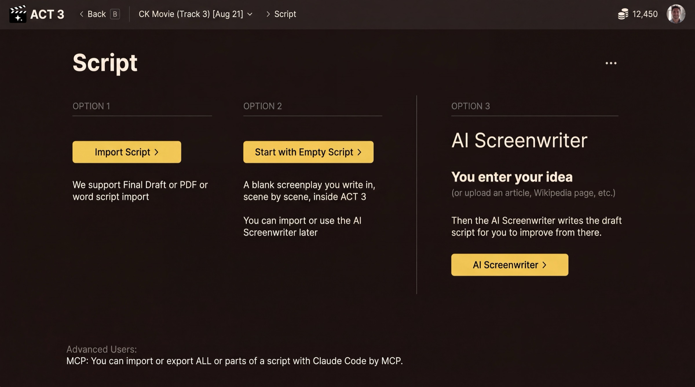

Step 6 of 6
Choose your script path
Your project now exists; next it needs a script. The Script page offers three options. Pick the one that fits, then follow its guide below.

Guide 2 Guide 3 Guide 4You have finished this guide
You have an account, you know your way around Home, and your first project is saved. The wizard now opens the Script page. The three options are three different ways to get a script, and each has its own step-by-step guide.
Your decision: where the script comes from
Option 1, Import Script. You already have a screenplay in Final Draft, PDF or Word. ACT 3 AI breaks it down into beats, scenes and shots. Guide 2: Import a Script.
Option 2, Start with Empty Script. You want to write it yourself, scene by scene, inside ACT 3 AI. You can still import or bring in the AI Screenwriter later. Guide 3: Empty Script.
Option 3, AI Screenwriter. You have an idea, or an article, but no script. The AI Screenwriter drafts the script with you, act by act and beat by beat. Guide 4: AI Screenwriter.
Not sure? If a script file exists, import it. If you only have an idea, use the AI Screenwriter. Pick the empty script when you want to write every line yourself.
What comes after the script
Whichever path you take, the wizard then helps you pick the look of the film, meet your cast, and build storyboards before it opens the Editor. Click Continue to return to the Step-by-Step Guide and choose your next guide.